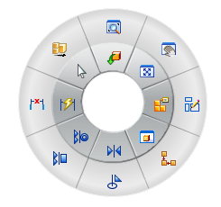
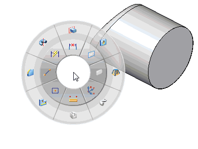

Radial menus are round menus with commands positioned in a circular fashion around the cursor.

The commands are contained in wedge-like regions. Commands are selected from radial menus by:
Holding down the right mouse button to display the radial menu.
Continuing to hold the right mouse button while dragging the cursor over a wedge.
Releasing the mouse button to activate the command on that wedge.

Learn how to use and customize a radial menu by watching the following video.
Note:
If you are using Internet Explorer and a video is not displaying properly, click the Tools tab (or gear icon)→Compatibility View settings, and then clear the selection of Display intranet sites in Compatibility View.